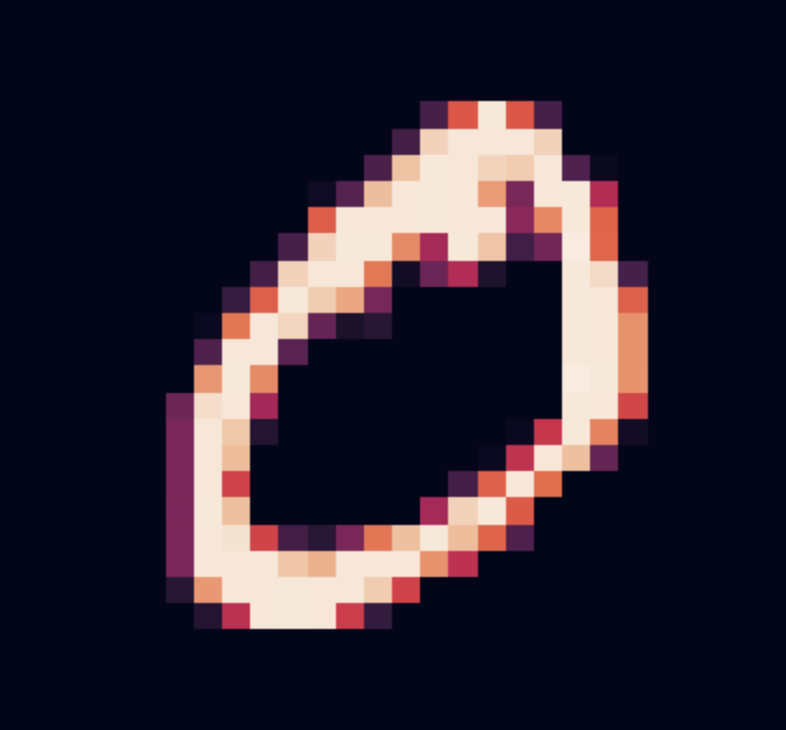

Welcome to JS-PyTorch's Web Demo! You can set the Model Layers on the right (number of layers and hidden dimension of each layer), and choose the Model Hyperparameters in real time.
- This model was trained on MNIST, using 2000 training and 100 validation images.
- The images have a dimension of 28x28.
- The output is a number from 0 to 9.
- The training uses the Adam Optimizer and a Cross Entropy Loss.
